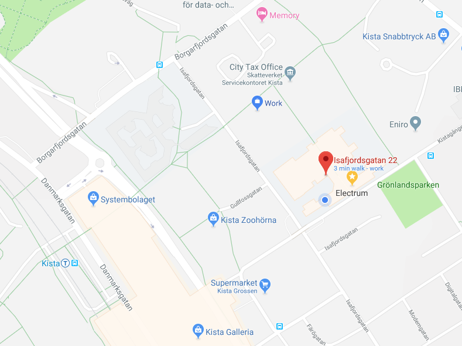

<!--<div class="alert alert-warning text-center">TBA</div>-->


<div class="container">
    <div class="row mt-xs-0 mt-sm-0 mt-md-1 mt-lg-2 mt-xl-3 mb-xs-2 mb-sm-2">
        <div class="col text-muted">

            <div class="text-info">Conference Location:</div>

            <p> RISE SICS: Isafjordsgatan 22, Kista, Sweden, Floor: 6, Elevator: B (Reception) , Main Room: Knuth <br>
            </p>

         <!--    <div class="text-info">Accomodations:</div>

            <p>The following are the nearby hotels to the conference location. The workshop does not reserve a block in any
                hotel. Please reserve your hotel rooms soon since they are generally sold fast.<br>
            </p>

            <ul>
                <li> River Inn (924 25th St NW Washington, DC 20037)
                    <li>
                        <li>George Washington University Inn (824 New Hampshire Ave NW Washington, DC 20037)
                            <li>
                                <li>Residence Inn (801 New Hampshire Ave NW Washington,DC 20037)</li>
                                <li> Lombardy (2019 Pennsylvania Ave NW Washington, DC 20006)</li>
            </ul> -->


            <div class="text-info">Directions:</div>

            <p>RISE SICS is located at the electrum building which is within a short walking distance (5min) from the Kista Metro Station (Blue Line) and the Kista Galleria Shopping mall. The Arlanda (ARN) airport is around 25min away by taxi.</p>

            <a href="https://www.sics.se/contact/sics-stockholm"> See here </a> for more transportation and contact details.

            


        </div>
    </div>
</div>